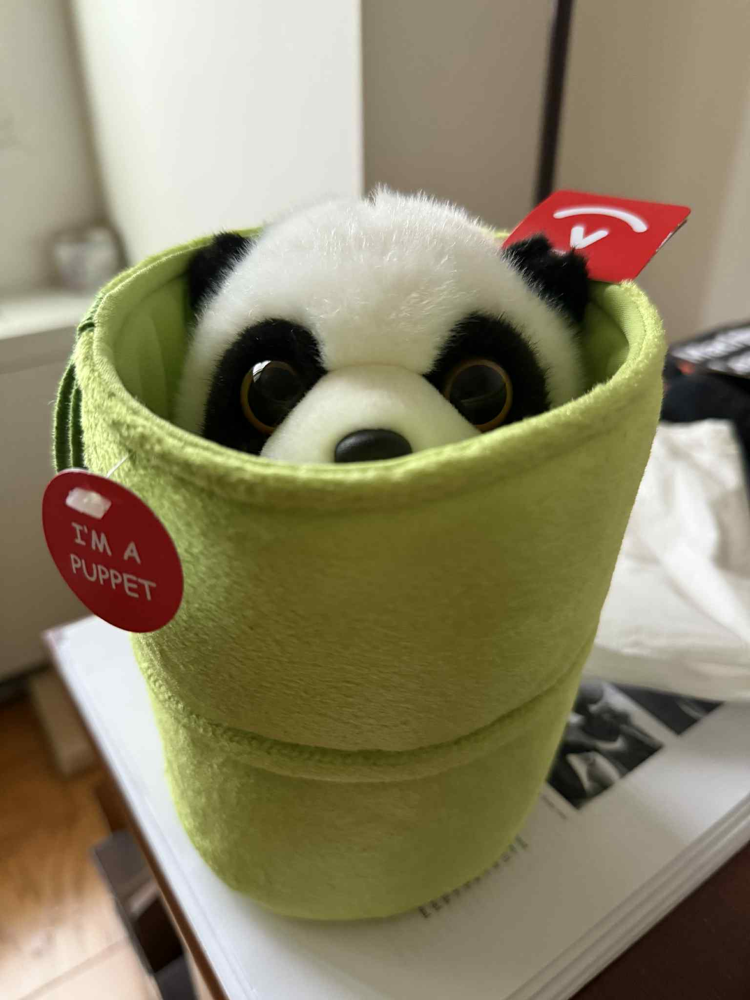
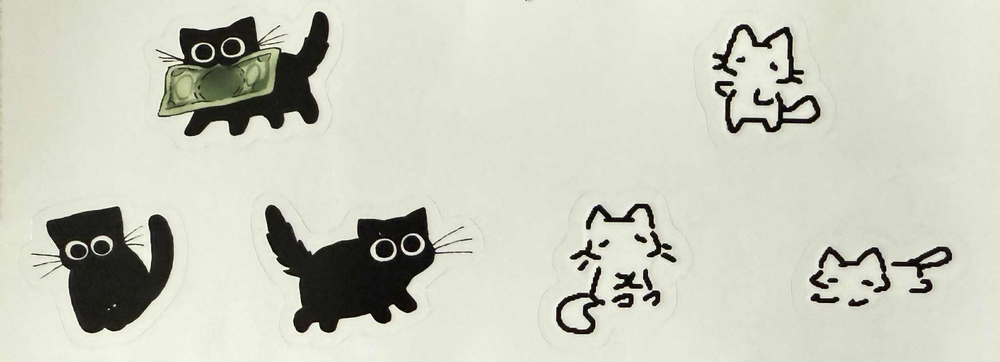

:33
Goopnight!!!! üëç. Without so many doubts!
https://www.google.com/search?q=what+to+eat+on+first+date&rlz=1C5GCCM_en&oq=what+to+eat+on+first+date&gs_lcrp=EgZjaHJvbWUyCQgAEEUYORiABDIHCAEQABiABDIICAIQABgWGB4yCAgDEAAYFhgeMggIBBAAGBYYHjIICAUQABgWGB4yCAgGEAAYFhgeMggIBxAAGBYYHjIICAgQABgWGB4yCAgJEAAYFhge0gEINjM2NmowajSoAgCwAgE&sourceid=chrome&ie=UTF-8
going to try wake up early!
1800$ for 1 ticket ü•≤ https://www.thedatascienceconference.com/agenda?fbclid=IwY2xjawJo5YRleHRuA2FlbQIxMAABHuw7nqylGq6j40ulFyiMAQdC8hlV0JJ2JL7arhY1aTzQR3JgVGtwEb8YkgCL_aem_phy7IgYQUS6jcK4Hy9Youg
Open do compare! :33 I don't think the Peo-ple like me...But they like u much!! :P Hehe bebe
:3 Hi Gabriel :3
Sstressed!
:333
:3 honestly, I am kind of stressed. I Have not found an internship for this summer. Still looking for intern volunteer work now ü•≤
Then How Are We Suppose to Meatttttt. I mean meet.
You still have to work Easter break yep?!
.Ok let me try be only mYselF.
Heyooo, so uhm, can weeee start with something comfortable for the both of us? Hi, Mickey? ;__; PSes (more to comeeee): I only practiced driving, don't have a license yet. Amongst many other Prublems/Challenges. Let's gooooooo
Despite all the deadlines, I stilll want to go on a shopping spreeeee =((
young me when look at others: erarrgfffffff haiz OK cede etc. Ya, so do you watch nba or just football?
:3333
Omazing debt relief program...hello Monday why so many...üëç also, Mac/Mike/Mrrr I MIGHT have some good news! :3
Piu piu :3
Pink looks good on you. But soooo, there are stages right...And how to blend in the 'crowd'? Or disregard the crowd...?
#dontmakemefeellamecommunicatinglikethis.Iknowimlamee. (I got work for now until almost the end of June! So still need to find work but at least!!!)
:3
#teamlazyhwduetodaybutdontwanttodohandsonexercise
;_; I waunt...
https://www.youtube.com/shorts/RPgilvwFM44 the first comment =)))
goodmorning!!
OkE, it seems/FEELS like up to this point, we have a principle of contradiction :p
Heyo, cutest!!!!
üëç
https://www.youtube.com/watch?v=CP6LQjJo7eY
omg no more confusing please. Procedings stuffs may be taken with a grain of salt. But you are also right wing right? And sorry if I was confusing. It hurt being fooled (kind of) before. Took years to heal (mostly heal from my own delusion but). It, They really took hold of my well being. Anyways, I feel like real encounters are really difficult cause we as different sex have nothing to talk about but just work (and plans for the future :)). But if any chance of a cool/chill first encounter or texting YOU want is fine. I am trying to make something that will click(superficially) between us for others/the whole world to agree with but nowhere yet. Also, the age gap is annoying (cause you are still young and I am growing old) and I think people gonna talk. I don't have much of a sense of humor so I borrow it from friends. My personal obsession is clothing, which I think you have no interest in. I think we can bond over complaints of the world reallly. I hope this doesn't bother you, my dear.
=.=
Uhm, I feel like I'm oVeR sharing here but. U share. Ahn is actually the letters in the Hangul? alphabet system of Korean language. When I make the gmail, ngminhanh is taken so i use ahn instead...
I will be like very busy this week! Will you be in DC this summer or anywhere?
so u r saying goodbye??? ;_; 9
Y u keep demanding the truth from me... üëç
https://graflantz.com/products/key-fob-heart-felt?variant=32849007542381&sscid=41k9_vv5xe&utm_source=ShareASale&utm_medium=Affiliate&utm_campaign=3153110&utm_term=2499189 pink or redd?
:3
hello! email thing is still confusing!!!, car is also still confusing!
digital creator etc...
do you know how to make a website to be searchable/show up when search on google?
I am doing final projects for Deep Learning and Quantum Computing! #ambitiousbutstilllazy
S4 ?
:3 :p
Hello, I plan to have today morning doing nothing. R u free too?
so many tings to say but yet have the opportunities.
(Were you ever in luv?)
so will tis be online for a while? *scratching my head
So, are u gonna be a detective, lawyer or boss of the bodyguards kind of or SPROSTSSST?... #TopSecretClearance?
kisses :3
Uhm, can we meet somewhere with pre-notice...? Pwease?
Goopnight ASKS! R u interested in explosives, i wonder where its energy comes from
üëâüëà My fam's here on diplomat visa. They will leave by the beginning of 2026 (I will too after them 3 months if I can't find a job *knock on wood). It's sad cause we just get comfortable being here! ;__;
üòí Hit Confirm! I went to a data science book review today. It was like a bit random. But informative... Met some people from a company called exelon. The company is a Pepco company?! *side eyes But like when Networking, have intrusive thoughts
goopnight! have to finish this quantum paper then to full time deeep learnin.
:3333
gonna have dinner with friend at Garvey todey.
*pout
goopmorning!
done with the quantum paper, the messiest thing ever get done. I could have make the language more clear but still don't understand the system as a whole so lazy don't want to spend more time on it...
:3
:3
https://www.youtube.com/watch?v=LjaA8C_Y36g
hellu!! I overslept today... Did able to get up at 9:30 10 days before, which is better! I probably will just gonna spend weekend doing nothing agein, trying to find random treasures. What is your weekend like? :p *stressed but is watchin netflix Bleh
so to confirm are we after love along side with/above other things?
can i also assume we have time? *crossing my fingers.
üëçüëç findin how radio waves get transformed into sound waves and how to make different channels
:3 :3
Argh so many. U so strict!
Noooo. https://www.propublica.org/article/trump-halted-agent-orange-cleanup-dioxin-vietnam-poison-risk?utm_source=threads&utm_medium=social&utm_campaign=propublica-threads&utm_content=agent-orange-threadi&fbclid=IwY2xjawKQXOZleHRuA2FlbQIxMQBicmlkETFrMXkzNnRGcjhxM3B2M2tzAR7n5hQo6g-wkL0iTE0iZMnUew21J-SOpOoatZ9hufvhW7J-iWLXtldVKmKrlg_aem_lGKM-LNwA_yO7SpHibKdSg
Spent 5 days at home not getting out. today went for a 20 minute walk struggling...
Good evenning!! Yay, FrEe QuOtes!!! Just watching the Goonies right now and some MIT maker portfolio on Youtube.
OK!
:3
plese tell me what you like. I want to try.
üëç
I am still over(ly)-simulated. Let merh calm down.
https://www.instagram.com/minhanhng123/
IiIii waunt a date!
I had kind of a busy day today, running errands? Good Night :33
Hello hello , am trying to get in the grrind, which is always very messy and confusing but WatTeVErz. Do u want a trip to Vietnam? I remember you are Irish, Dutch but then can't remember the other 2. Is it Italian and Portuguese? But I've been thinking, are u sure you kind of work for Homeland Security and for American government and people. Is there a place for us? Also, I really really want to stay here but that's depen-dent on whether I can find job or not. However, a strategy I use back home is "nói trước bước không qua", so one can't say to success it before you made it there.
lookin(g) for a bracelet to wear always
:3
*nod* is guilty of buying too many things
https://www.youtube.com/watch?v=0OXaanDHENI
what did you do today?!
aneeways if u want to hear me rant on a normal day sunday evening
I went out today to get some frilly socks because I need a purpose to put in some steps. I plan to go there H&M by metro then walk home. I got there and the place wasn't open so I have to walk to the other H&M which is at Georgetown. I got there and the socks materials was terrible and the frills don't look good. But cause I already walk there, I look for some summer clothes. I got an on sale Athleta shirt, whose materials very light and airy but is polyester and a Alo Yoga shorts, which was not on sale. The short is ...a bit really short but I think it is a nice short for summer cause it looks fancy in my opinion. But I hope I can wear it often, if not, may return it cause too short making people cat-calling for that... I wore a sleeve-less lemon print with white bows in the back (just received from Hanoi) and these black people is overly chatty with me, calling me 'sweethearts', looking at me. Very uncomfortable... But I still want to keep the shorts!!!
andddd, cause you're kind of here. Which is better: I got the 68$ shorts but now i look online, there is this 78$ version. The 68 perks is have longer inseam and zipped pocket but the 78$ have layers so look more techno. But i think the 78 would look better on someone who have actual athletic thighs, legs. Not sure but 68 might be better cause less detail.
good next week!
but :B
ü§™
Polish? /p>
:33
watching a thriller movie on netflix, the criminal is so cruel and inhumane, like a serious, real murderous monster. Will sort my room tomorrow ...
Classmate from High School. Do you think I am far behind them...? https://www.linkedin.com/in/anthonyvu345/
#iamnothardworkinpeople... But he's not in the same field as I, so I will not compare.
Mentally, I am 1-28 years old. :) (i nove uoy)...
üëç maybe... less than 10k?
haha....
:3
ü•≤
Weird day today.. Not sure what to do.
Dont hate, mind me. but the button strap detail kind of cool/awesome(degrees of free doom like 30 degrees)! https://www.aloyoga.com/products/w2798r-dreamscape-tank-black?variant=50661342511463 But i think it's math! But don't know when to wear such tops :B
:p
cleaning my computer a bit
Do you know why this is?
 looked it up and it is a bit related
looked it up and it is a bit related
also, might need to change the repo address cause this one is connected width the resume etc... Probably gonna change it to minhanhnguyen with some other numbers?! :33
#serious
just want to make sure it's meee studying and not me being someone else studying. #amlazy
wait what is your DOB? Is it in 9th of march?!
So the spending is about resources right
:33 *for you
:/
Heyo! yes, please go forward with your life and goals and check in with meeee once or twice or thrice or more a day when, if possible! I'll try to wake up early but really don't know how (...yet......?)
Uhm, do you think 150$ for micellaneous is Ok doable ( Not including subscriptions linkedin, etc, books.)? Now it's more like more than 300$ per half... month on those!
Also, do you want these heart socks!? https://imogeneandwillie.com/products/blue-heart-sock-in-natural?variant=43687400898734 I heard that their cotton is extra soft
also, less *sugar food if possible plese
sweet dreams!
...:p
:33 It was nothin special. Goop night!
OKay.! aggressiv https://www.youtube.com/watch?v=Rd2r3trh4Nk
:3
This person have a talk today at 6pm. Should I go?! I'm a bit lazy... https://www.linkedin.com/in/jlowin/ The topic is Model Context Protocol server, which I don't know is relevant. I think it's stat based, which is not ML. It's free but not going cause too much stretch i think..
120$ for 6 months?! How does thatp work... I need food, skin cares, clothes and others etc...!
Ok, I will try save money but that means u might hear me talking about what I don't buy a l/not!
t(h)anks for the spaces! Sorry I not understanding certain things.
this is nice! https://www.facebook.com/share/1CASqJ2jQv/
Hello! I'm done with my room cleaning! Let's hope I can start with making proofs and stuffs. Also, guilt bought this today... https://www.target.com/p/lego-icons-10369/-/A-90863999#lnk=sametab Orgininally want to buy this one https://www.target.com/p/lego-icons-10368/-/A-90864002#lnk=sametab but look a bit creepy. Sowee...
LOL, me curious, never met a random history student before, only met one from Vietnam that is best of best who studied East Asian history in Harvard & Columbia. And unfortunately, he look like one of the statue of a boy I live draw while in Vietnam, but I don't really partake in such activities anymore (because it's no longer useful in what I am trying to achieve?) And yes, I think i do streamline?/ separate people by their looks (wink wink)...Not very good but every else things are taken by people who are better than me at it so there is nothing else I can do (back then). Also, really don't know how things work in America, only know that the country get a lot of money from WWII!! At home, exclusive things are only for the top and super rich and if not engineer, doctor, gov administrations, and business? there are absolutely very little funding. I don't know how America can afford funding for stuffs like art, social studies, histories, etc, which is great! Andd, there is another ban on new student visa :(
Ya, i'll tell you about me a bit later todey. Can u please share you pasttt plese too?
Agein, salt.
So, my decision for high school is to idolize everything and everyone, which helps me with some problem solving but was really bad with making friends, because I couldn’t find people who are like me and end up idolize everyone (which was not too bad cause the high school have really good demographic). I was able And I like solving problems that people just kind of mention to me, problems that can be ‘only’ be solved (fast) with my perspective on life and things (solving it only by saying sth that first come into mind…) The high school I went for is really good and famous. I failed to get in it for secondary school and my fam was kind of disappointed. So I tried again for high school and made it, but not to the English class but the Chinese class (so English 1, English 2, Chinese and Russian all took the same test but grades are descending. The school is really active, have a lot of extracurricular activities cause its main focus is really to study abroad. But like after getting into the school, I was so depressed cause I keep thinking that I want to get into math classes. So, being stupid, I completely disregard studying Chinese and become a depressed student and I skip school a lot. And so I met Trang, a journalist who studied in University of Chicago. Her perspective on life at that point is like mine, kind of emo but more experienced and way more antisocial (but she is really intelligent). So she got me into reading philosophies and drawing but the material is so dense that I procrastinate a lot. And the moral of the story is to be creative and really hold to the stuffs that moves you. So, everything idea was kind of in relation to some math/physics. Aside from that, so my crush from elementary school is (idolizedd) really smart, he was the reason why I think I am so stupid often. He is in my high school too and end up winning a bunch of gold medals from IPHO, which is International Physics Olympiad. And I try so hard to negate him from my life. Then I realize people’s trajectories are different than mine and comparing really did not make total sense (but I compare anyway). In the mess of every field of study (cause I can’t tell one a part from another), I was like a so so student. But thank goodness, I was able to get scholarships (have to pay 7k per term, there are 2 terms) and went to Bennington College here in the US (after 1 gap year). I spent a lot of time drawing and reading many types of text(philosophy, psychology, poetry etc) while there, an A+ in drawing/painting and so so B B+ in all other class. Trang told me to go for any class that I liked so I did just that. Again, math crawled up again. Take me 2 extra years to switch back to math. And then my fam moved here in 2020. So, after done with college I moved here with them. And now I’m here. :3 #lonelysquad Hop wee get to talk IRL :/ :33
keychains a messsssss.
Cute? :3 
Do you run everyday?! :3
:xxxx
let's hope i'll get up early tomorrow for a longer day!
la la la? Did not read the bible yet but will make time when possible!!!!
Congratulation on your award !! ü•≥ Dad sent me to get a baguette today. Did not enjoy that ride/walk...
Hello, it's me agein. If you want, I can be your shield anywhere, anytime u need! Also, I scraped my knee today.
Oops I also accidentally bought the chrysanthemum lego set that is 23$ and a white laundry basket that is 12$...
Really, that is not found? Great! *hugs* :33
...How do you like your daily dose of tlc delivered?! :3
playing homescape video game for a bit !! Goodnight!
Some music I sTiLL like https://www.youtube.com/watch?v=TGwmFIphNcg The music is purely about composition/mixes of sound, not related to anything real!!!!
Not ready to get off debt (also don't like tell u everything i buy (but should?), it's kind of embarassing...)! Was thinking of buying an (expensive) candle end bought another pair of (not expensive!) jeans...
also, I need to be able to catch some trends in AI that is developing and produce some novel ideas to have a purpose for working
:3333
Hello, this is still super broad but do you think I should focus on getting a research intern position in university or should I focus on getting a job at some business/company?
Ok, I missed the first day of this!!!! I thought it start tomorrow. Maybe you can look at the agenda here. https://expo.scsp.ai/agenda/?utm_medium=email&utm_source=cvent&utm_campaign=aiexpo25&utm_content=day-one&utm_term=unverified It talks a lot about new stuffs applied to security. I am looking if there is anything related to me...Argh
Hello, Im home! It was a good expo, make me want to be more Professional! How was your day? I bought my friend lunch and so he insisted on paying for some things i picked in Sephora *Guilty So basically I owe him 15$... Maybe your little nugget (child-ish).
Ok, ready to move away from debt!
:33
Did not buy anything todey! Just 2 cupcakes! And walk for an hour non stop today, in high school used to walk for 2-4 hours everydayyyy! https://www.youtube.com/watch?v=m2ebf2pyIjM
Goopnight!
:3
Im as in Imaginary number s-quad. Yeh whatever?
Can i do this? :33333333333333333333333333333333333333333333333333
it'd be cool if we could make construction sites noiseless
Hi.... U r busy these few days yes? Also, am I being, like, stu-pid HERE? Is there a normal way you guys do to start, strike up a relationship? Do u need more time? Am I interesting to u? And... do I need to wait a few months,YeArssss,...EvEr? Can I be the person who start the relationship...??? I think my fam thinks you great...Or yoy want a thrill? :B :3 You want surprises? You want innovation, money, housemaid(not included), friend? Tell me whyyyy you'd like to stick around? I stick around cause OMG an American Boy who have some interests in merh, likes learning (motto learn everyday), is cute, responsible, a bit too young (but try act olld and who don't like youth?) and is not a crazy sexually active monster! :3
:3 might need one of these... https://www.youtube.com/shorts/tNSjkqtwwnM
üëçüëç
Au-ch ark-k-k-k
:3
rEaLly want to buy this but so Expensive!! https://www.jenniferbehr.com/collections/bobby-pins/products/kara-hair-clips-rose?variant=Rose& Do you think Pool or Rose is a better color?! Maybe I can give mom one. But probably should not buy!!!! Still...Pool or Rose?!
üëâüëà Okiie, it's a lot of money, like 2 weeks of food supplies. I'lll just let it float in my brain for more times!
blap blap blap Anyways!!!! Good Monday tomorrow!!!! Also, do you think we can say that what AI outputs are meaningless (eventhough the content is correct/meaningful) because itself doesn't have/create its own purpose...?
:3
üëç NeED a cotton tshirt though
U know... my mom is the kind of person that will do anything for family, like basically she sacrificed everything of hers to earn money to raise us. I don't know if I can be or should be so yet! I don't want to stop studying and probably can yet get job that just pays! Myyy dad is a work person in tech in general... Probably should just focus on the now day by day...
A friend just busted his jaw crashing into a electric pole back home! He lost 16 teeths. So sad! Also...(always late), i think motion is a property of materials, like rocks/stones also have atoms structure that make it into different form (liquid and gas?) according to different temprature? Also, is Atlantic a good news source?! Also, Austrian school shooting, do you think people who commit school shooting are always mentally ill? How could one wants to take away other people's lives? Maybe It's because they view their own life as too miserable?
#against war. But sad to admit that I too sometimes was a nightmare of a person during high school and college.
:p I prob should stop borrowing from others.... But I neEd to thinkkkkk and goal is to surpass a line of thought then to display the thought (but now, I am still figuring the picture for mathematics. I think I vaguely got the picture for data science...) And today, met someone's dad. honestly fell a little on edge when people spend more money and seems to live life better/ more technologically advanced/ more yolo than us. But that's should be peripheral matter... Best scenerio is to not have to translate from one concept to another and probably take responsible for myYy actions. But how to determine one's 'independent'action right? But agaain, :3 How are u tOdAy?!
#jobless wink wink and side track-ed
find this weird liquid https://www.youtube.com/watch?v=qMj7YdCfYos&t=116s . Also, do you know why when water is draining through the drain (which have small holes?), they create like a tornado spiral instead of just drain like we pour liquid?
Visual abit too much but music's fine? https://www.youtube.com/watch?v=8jL0vy2YaDg
Aneeways, I think we're not getting any (not like anyone is getting anything mean me) cause I need to lose at least 3kg but unable to do soo for like 3 years. And not surre wweight loss should be the focal point here too!
:3
Went to the White House today! It looks pretty but kind of old aesthetics. Love the garden but can't get a good picture of the place. :) Also took some photo of myself but sunscreen makes me look extra greasy. #tellmeifi'mOvErsharing

Still don't know where the potential energy comes from https://www.youtube.com/watch?v=2UHS883_P60
it's stormin! Hope you're in a container. Hugs maybe? Oh aand, I was stopped at the entrance to the White House today! It's because my Visa, which is in the new passport, expired. And they can't get info about me entering the US with that passport. After a while they asked about my previous passport and I gave them the number and I was cleared. Made the whole group wait for 30 minutes...
Can wii? try out things? when have times?
:3
Minnesota State *lawmakers got killed.. And MY because one of my high school close friend she have a sibling who died and he also has a dead sibling... It's really unfortunate. Asks who...
Sometimes i care about other people because i once was lonely too!
Ya, but how to convert already bought things/debt to no longer in debt? Im not selling what I have ;_; !! I am just trying to refrain from buying uneccessary things that's not meeee related. But willing to learn how to move (slowly) away from debt, if that's what you want!
*side eyes and a cute pout*, fireworks yay! a car yay! would not be able to save to buy a car aka me? And I guess I'm also trying to figure out the saying 'you drive like a women' mean! Do so for the goods of other people really, and for my own underStAndIng. And, OK, I'm too old to be slacking yes... ? :33 No beard please/plese :B
comfused life
https://www.facebook.com/photo?fbid=1124618876361802&set=a.592835479540147 might not be american style
*supergoop!
do you have some kind of TeAm? Are they security related OnLy?!
should be working but watching the Titan Submersible Doc on Netflix...
jj just for fun! not trying to disturb you https://www.youtube.com/watch?v=JWiwuiT58Yc
let's keep goin!
üëâüëà I'm going to get that shirt! Bought it!! :3 Argh but there are better uses for that money maybe ;___; Promise I'll still try to save money!
Im a bit confused. So you're thinking about insurances?! Who are these top providers again? I'd love to be provided for but it's 2025! Aside from finding the impossible aka job. I should be able to firsly partially provide for myself somehow? Do you plan to stay here in DC for a while right? Or do you want to hop around? If I can find a job, I would 'kill' for a move in situation :)
Agein... What's integrityretire mean? Yes, so you want a life with fidelity and service? For Service, so you want to spend AlL your life for someone else/your nation and not yourself and close people around you? So, you want to live with an ideal? For fidelity, short answar YES. But i'm sleepy right now (spent all day studying woohoo)! But there's many things to learn. 3 take awaysssss: it's what you do, not what you said. And a random quote: statistics makes it so that you can't say you're certain' 'We learn and we come back stronger than before (taken from a car add...)'
SuperGoopnight!
I know this is not your expertise but. So this guy, boyfriend of a friend also study Machine Learning and etc. The paper he wrote, though I don't know all cause my field is not autonomous vehicles, shows that he understand the math theorem that is the basis of such algorithms as well as have a new idea on how to tweak the algorithms to produce better results. https://www.facebook.com/share/1Bbtza4KUG/ HHHix, I think I will try work harder! It will take a long time though, because he worked hard since high school and university! Ergh. I still want to try wake up early first :((
:33333333333
Can I be girly plese?
So you like/want angsty styles? Nice brand!! But tops are too crop, bottoms are too long and I don't know JaPAnese (not that I know French...) !! There's a shadow top, which is nice!!!! I like their necklace! The style too military, rock and gamer for meeee :(( ;__; The designer's ig is good though! Staying in the telecom realm right?
So... It's not a D but a J ?? And I should post more photoss ?

is this the 40k you talk about :(((
Also, 69 looks like feng shui
thermal earth great!!
bleh
wwake up a bit earlier today!
went out with friend a bit, will tonight...
Ok, I think we can try on military household. I'm against WAR!!
Heyllo! Walked 9300 steps today for 1:15 hour! Walked during the time it's not raining but it were thundering! And have to walk under trees a lot. So was kind of scared. But yeh, I'm looking into iT. Have no idea what you're talking about :) What is GYHNZWIAXDZUR yijuzomyoqmzs hiyavfqnfchsn :) :3 ?
I've ate pierogi once! And I didn't know Warsaw is a Poland city!
https://www.facebook.com/photo/?fbid=1107578244557971&set=a.659199489395851 :(((((((
:3333
*pout
My brother and his friend was at the zoo when rain happen so they probably shelter at the store and bought me this! #lalala always about buying something

welp 9 is stillll out there. Weee should still be chasin? :3333 Okay day today, get some work dooneee. Watching this show called The Waterfront on Netflix alsoo. But too long so just gonna read the plot! Also, did nottt know that cool dressing people, people in fashion industry? are often drug related. :((
GoodNight!
Good morning!!!!!
Plese don't give up on meh
https://www.youtube.com/shorts/paHr1oLaqJ4
https://www.youtube.com/shorts/wmbL_g11UG8 :))
Huh, okay Oh :p
ꓷ| So, tooo confirm, it is a J ? üëç :B ...
goodnight!!
Had some dream last night but it did not make much sense
Hello hello, not sure if too soon to askk, I heard it was kind of a spreadsheet situation. Wat's that about? Went to get mom a present for her birthday tomorrow!!
How is your dayyyyyyyyyyyyyyy?!
üëâüëà :B u have dyslexia? I think i might be some light case of autism, cause had difficulty separating background noises from contents, amongsttt other things.
MAYBE should üëç
*side eyes * :3
https://www.instagram.com/reel/DJpNuT3N51K/?igsh=ZGhtNnN3cHV6Z241 science facts
So sleepy!
Hello hello, so America (more like Trump) attached Iran nuclear sites right. Wondering if that would increase chance that Iran would bomb America where civilians live.
Lauren *will not be here next term. :( Sad!
Wondering, when sloshing the water inside a bottle, we can hear the water's noise, so that botle is not sound-proof but leakproof. So, what is sound waves? How can it escape the bottle. #Asked Chat GPT, it's cool because it carry away warm air around your body. My brother's friend is going today. I hope you're fine with having more attention agein :B
need a keep sake argh !
Goodnight!
So... This one?! https://jenny-bird.com/products/andi-slim-bracelet-two-tone?variant=43348892614811 Or this one?! https://jenny-bird.com/products/celeste-bracelet-two-tone
Okee! Pressed buy. I hope I can cut down on the amount of music I hear... And cut down on coffee to mend that extraa 60$!
Good morning !!
üòÅ üòá :p
Hello hello, a bit busy today cause I delayed heaping work. Plus todey brother's birthday !! And he is totally being horrible like I was when I was his age. Great :) Anyways, what is going on with the brand David Yurman. Why is it so phallus related?! How does that work?!!
Just random asking! No pressure on answer-ing, do yo know any good show rooms near DC that sells Toyota cars? The place my family work for need a new car and we weren't able to buy the car for cheap cause someone pays a higher price!
:3 hEAdingg to bed early todey. Good nighte !! üëç :3 @u #no to viciousness
https://www.youtube.com/shorts/z6DSSjVRCI8
# both the shirt and bracelet arrived. I think it look really great! The shirt(s) are perfect! The bracelet is kind of like a statement piece though and need the right outfit! Now just need occasion to wear them ! Hic hix, still also like the BiG paperclip bracelet though *shaking my heads!! But no more!
Can weee try wake me up early? I can try to be fit for you! Pwease?
:3
;_; Happy Friday! https://www.youtube.com/shorts/I_kCDkvL3aI The wrong contents vs the 'epic'? background sounds is funny!
:p :33 Uhm, so, you like pop music?
Hello hello, sorry, I was dreaming about some math stuffs?! What do u mean I'm in or out? I'm in!!! But I am still figuring out a plan/what to do for the near future. I kind of want to continue to do research/study than focus on a job. But that means I won't be earning much !! Aand, I feel like staying in super shape is a bit hard for merh right now! But I will kind of still tryyyy hic hic!
Also... Uhm, got a mug and a face cleanser jesterday. My skin is not happy lately!!
https://www.facebook.com/photo/?fbid=1157492009739362&set=a.465837942238109
Did I doo something wrong hic hic, I thought we're, for now, finalizing the setup!? I am not 13 and I was not being dis-honest! It's just weird if I say ILY online while can yet face you IRL, one on one, etc..? Plese give me a clear views of your expectations and point of views. Also, what's 7? Huhu, so I need to be more serious....
Let meh be the instrumental music behind songs plese....
Did not get a coffee today! #firststeps
:p
What do you think about now people use AI for resume a lot?
üëç :33 üò¨
:333
Nose like yours https://www.instagram.com/p/DLAToryoMgh/?img_index=1
Uhm, I think I'm a bit queer. Like I like to looks at pretty people. Is that fine/ok? :3 REally did nothingggg today.
Oke, no buyin...
I hate constipation! ;_;
Uhm, I do have some kind of mental illness but it's treated/is treating so everything is fine! Physically lazy to work out but physically don't have any serious harmful disease! :33
Messy!
US relations to other countries are more complicated than Vietnam's relations!
Goodd night! :33
:33333333333333333333333333333
Someone is oFf todey ? :33 I'm stuck with Fourier transform!
Pretty BLUE https://weezietowels.com/products/weezie-basic-washcloths?variant=46588184723626
Na na na :3 üë∂
Fireworkssss Going to try! wake up early tomorrow! Might grab a coffee! Did not wake early :(((((
Texas weather so bad!
What's namprd04 and prod ?
Slept like a baby today
So.. Are you a fan of/ into the Mission Impossible series? Aand where u from : : the ocean the mountain, valley or delta ?!
Na La La good e night!! ;___;
üëç :3
run some errands today! Got myself some stuffs, a chicken lego and a shelll earrings dis one https://www.gorjana.com/products/shell-statement-studs?variant=45342168481923 and dis one https://www.amazon.com/LEGO-Disney-Moana-Heihei-Building/dp/B0DJ1BM6YR/ref=asc_df_B0DJ1BM6YR?mcid=e356063f99bd38ebbb99238da3e99d72&hvocijid=16612593722462795357-B0DJ1BM6YR-&hvexpln=73&tag=hyprod-20&linkCode=df0&hvadid=721245378154&hvpos=&hvnetw=g&hvrand=16612593722462795357&hvpone=&hvptwo=&hvqmt=&hvdev=c&hvdvcmdl=&hvlocint=&hvlocphy=9007532&hvtargid=pla-2281435180058&psc=1 if you carre Agein, ...hope to wake up early to mor rows! Will also try to not :33 listen to music
kissy face!
So.... What's your plan ?! No.... But Okee :3333
And also, do i have to put anything in... :3333 I'm fine with NoT! Maybe I ShOuLd..... Maybe I shoul
Nói trước bước không qua but got 1 more month working with the teacher!!
Brainn all over the placcce oppsie don't u think Mark's the cutest :3
:33
=.= *pout SoMe kind of whit-te light not surre https://www.youtube.com/watch?v=PK02xDT_RWA&list=RDTanvLm1gQLM&index=50
good night
Worked out today! Will eventually try to transition from walk to runin :3333333333333333
Fave artist Tomma Abts, if I can get my art career to be longer, I'd move in that direction. When study art, I was always about the now, never know the importance of history at all! But anyways, that road was meaningless because I really don't want to put my emotions onto the canvas. I could move to the direction of something metaphysical? but I'm not that 100% so I just shifts back to things like math
gudd night :3
zfgsaerewaadsdgb =.= IF that's watt you waunt xxx
Really like ThIS song lately https://www.youtube.com/watch?v=Tv9YoYCKNoE&list=RDTv9YoYCKNoE&start_radio=1 :3 Do u nove me
Hello hello. Yes, time is running out! So do you know how to constantly study without sacrificing a social life? I will be making a plan and sharee with u if that's OK. And to continue my study, teacher Hieu suggests me to look into the dude that teaches an open source online course on machine learning in MIT. I believe that is to understand how he teaches, how he set up the problem and how his influences life influences his logic. And, can we ditch the stereotypes? Can we only use it as guidelines? But I want to stay in the US so iff you can show me what Americans are like (food for thoughts) would be great! :x
You participated in graduation ceremony this summer??! Isn't your department sociology? =.= Could have catch you ou u
*huh* GooP night !
JuST sayin. This looks NiCe https://us.louisvuitton.com/eng-us/products/onthego-east-west-monogram-empreinte-nvprod4670034v/M23640
https://chylak.com/us/en/bags/shoulder-bag-with-flower-buckle-glossy-black
I think we have health insurance back home. But it's way way way cheaper with and without insurance there. Just come to the hospital, pay up front fee for doctor consultant or medical exams (and have to wait a few hours!) ! Only my uncle bought life insurance i think !
Priority: Health
...On ething about luxury brand is quote "quieter", like more attention to detailssss, more elegant. 3000$ though... Who have the money for that rn... But I do need a bag that's bigger than the one I got. 200$ though and vegan leather. Feel like I can get the same silhouette but cheaper somewhere. https://frejanyc.com/products/roma-bag-oat
good night !
:(( conflicts
Yes OK, I can try do thiis ! But mom said I can buy a bag if it's really really pretty for going back home. Don't want to/Not go/going home!!!!! ;__;
But need money right????
Studied today! Will go to bed early... Still wake up late arghhhh
So many today!!!! @@ So... You KnOw Japanese?!!! So we should focus on revitalization and leadership?
DESPERATELY try to be cute!
But ANNEways https://www.youtube.com/watch?v=y_7CLlIbEFE&list=RDy_7CLlIbEFE&start_radio=1
Hihi :3 :p
Kissy face ! Don't want to study today!
Summer Cash 40k? Would love some background knowledge about this. For me, I have to get off debt first though (no, we are NOT actually in debt, I am in debt of my parents but they don't charge merh #onlinedating Okay...... Maybe innnn 1-2 years and etc...? :33333?
https://www.youtube.com/watch?v=AIogQ8FxfvU&list=LL&index=35
oh no.... https://www.youtube.com/shorts/1eJ9AdJIn-o
Whyy do I need car/auto insurance?! I don't have a car!!!! I don't know how to take care of a car!
Trying to make the day longer!
Jealous of people who have BF and of people who are smarter than meeee *cries..*
-The- cheating caught on Jumbotron in a Coldplay concert..... >.> ☹️
Hello, HeLp I need to choose a place to eat with friend. They reccomnend these 2 places. Which one is good? Mexico cuisine or American grilled stuffs? Pwease rep soon, we go o.o tomorrow! TYY https://elpresidentedc.com/?utm_source=GoogleBusinessProfiles&utm_medium=Website&utm_campaign=MapLabs or https://stanselmdc.com/menus/dinner-new/
11:50pm and he did not cheek on me ;.;
#girllll math, greet music :3 what are your plane today tonight this weekend?!!
are u out with work friends? old friends -ish
gn!!!!!! wanna hug a bread? Uhm, a bread because banh mi have oval shape, meaning its waist is bigger than its b.r.easts and bottom :))
SML omg stay pretty sooooo/too much work!
*criesSSS
Soooo, kitchen open OKay? I think it's CoOl but time consuming!
Uhmmm... badddd person influence. Want to hear a song? https://www.youtube.com/watch?v=XCjd3ByCGUE&list=RDXCjd3ByCGUE&start_radio=1
Also, will you go back to school sometimes? Maybe, we can acTually make somethings in 1.2 years or lilte shorter?!
Went to the mall with dad tofay.. Because I bought a pajamas yesterday and the cashier did not take out the metal detector thing.
I wonder if we have a sPecific time in the day to touch base
Got this nerd looking glasses to match your vibe. https://www.warbyparker.com/eyeglasses/bromley/black-walnut?w=wide I am curious why a criminology degree? I assume that's what you like? Also, are you team legislation supremecy?
Hello? Hi Hey???? Watched crime movie before the devil know you're dead. Don't understand the ending. (The wife of older brother....Why the dad kill his own son? How can such good parents make such bad children?)
Have a productive next week!
Do you think I have too many HR skills to work as tech? (nOt suree)
https://www.instagram.com/reel/DMIhvStuuca/?utm_source=ig_web_copy_link
https://www.instagram.com/reel/DMXjrGUMMCs/?utm_source=ig_web_copy_link
JuSt sharingg https://www.youtube.com/watch?v=7evUGumkqvQ&list=RD7evUGumkqvQ&start_radio=1
I'm FiNEEEEE
Andddd I bought a lipstick! I couldn't by the one with the bigger base cause no shade fits me. And it's name is all like big city like TOKYO, BALI, MONACO etc I tried their shade Rose Tokyo on and it was a bit pale, feel like a confidently naked person would wear that. So, I bought the lipstick with a thiner case in Peony. And it was 7$ cheaper so that's nice. Could get an extra cup of coffee. I hope my buying era will end soon ;_; Also, do want a boyfriend tshirt. Prob gonna get own boyfriend tshirt too smh BUT, it is what it is!! Got up 1 hour earlier today :33 Will continue to improve!
https://www.youtube.com/shorts/feyFSBA-TVo Met some athletic girl holding a tennis racket today. She was slurping on her drink üôÑ
FiNeeee. The thing is it's extremely long and also extremely short really, my sexual experiences that is. :B
Couldn't get any work done today ;__; nod nod
üëç
*poutttttt sorwrey
https://www.instagram.com/p/DJrnruqJaJ3/
*cries ;____; thank u :**** ♾️
goopp night!
meow :3
Mark. Don't make the profile picture blackkkkkkkkkkkkk!
The hair is military style!
hUgs ü§óüêôü¶ëü¶ûüßÄ ;_;
I dare you to... make me study on saturday morning!!
#back to reality yy
uhmmmm, if I give you my home address, can you buy me a lipstick, or is that tOo difficult. Maybe an oversized shirt? A tshirt with your name on it? :) #oK with stalker syndrome...? # a little bit of a psychopath... Need to stop listening to random music! (Random music I don't know the backdrop off!) https://www.youtube.com/watch?v=5rgHYP0dD_4&list=RDPxNYvk_0Onw&index=5
mayb e: bad at math and stats but into economics? no problem, I am not the best (prob near the worser) but can help with (math) concepts!
gonna go to annapolis tomorrow with family! gN !! Can't go cause rain from 1 to 5!!!
How can I switch?
Need to make new friends howwww?!
:3333
Can't study ;___________;
:3
Wow :3 CoNgratsz. So, what do you want to do long term?
Uhm, i'm just in the process of check-in to see what's usable for data analysis/machine learning for a duration of time. I think i will start looking for internships and jobs at the beginning of next term (kind of late i guess...), plese hElP if possible!! What's your fave food? I think i'd want one of my kids to be of engineering basis! Kissy face
Also, so you like Ahn more than Minh Anh? ;____; ??? So, basically you're faced with years of unrelieved tension? la la la :)))))
Mom bought me this bag yesterday at the outlet! Looks really cute in person https://www.amazon.com/Tory-Burch-Convertible-Crossbody-Shoulder/dp/B0F9GN6LZJ?gQT=2&th=1 :3 But I think the silhouette is suitable for younger girlss too.
And so, you interested in girls who can do politics? JUSt asking
me me me me me me me me me me meeeee!
This commercial is so cute!! https://www.youtube.com/watch?v=0qB6ErP2ibU Might return this for another one, perks is that it's clean? But the finish just did not fit me. Should I just keep things as specimen?
Are you in the field or in an office?
:3
might want the 150 colored set in the future? https://www.dickblick.com/products/prismacolor-premier-colored-pencils/ Hate the name of this though. Like I don't know anything about yo yet, not even a name, why do u have your stuff out... But of course, like eveyrthing else, it's an approximate! :p If other guys, https://www.youtube.com/watch?v=PxNYvk_0Onw&list=RDPxNYvk_0Onw&start_radio=1 (approx) And you don't like animals?! How am I ever get into real estate.. o.o Thinking about the hair clips agein.. Uhm, so the other day while i follow google maps for a shortcut and it was a dead-end with a lot of trees I suppose if I go pass the trees, I'd end up at the road but there's no way across those trees. I hope i did not trespass on someone's garden...Cause I know they can use guns if I enter their property! Was a bit scared.
Hellu :3
Cry https://www.forbes.com/sites/stuartanderson/2025/07/21/new-trump-immigration-policy-ending-the-h-1b-visa-lottery/
https://www.instagram.com/p/DMvPhiQNGY7/?utm_source=ig_web_copy_link :(
https://www.youtube.com/watch?v=nCd0D5Fv9SE&list=LL&index=19 JUSt some music!
https://giphy.com/gifs/OuQmhmAAdJFLi
:333 333
Thanks Mark/Max?, now a car is jUsT a car! :3 kissy face
Sooooo, about my dashboard? Maybe I can make changes tomorrow afternoon or maybe next weekend afternoon?
:33 :B So, where do/should wee goo?
And no, I am not letting go of the lovely donkey period!!
üëç
food for thought over loaded!!! :3
Ỏ I nove u too! * Let's try to build Up a kiss tOgeTher *a little pout :p
waunt! to hear one of my favorite song now? https://www.youtube.com/watch?v=gvUg7KLAclA&list=RDgvUg7KLAclA&start_radio=1 And the song I liked here I discovered through a movie, based on a book by Chehkov. I used to like some of his stories a lot cause it tells about the living conditions that have some similarities with my life. However, that movie with the song is kind of weird. It's a love triangle between a poor girl, an elderly man, a middle-aged doctor. She chose the elderly man to escape poverty and find out that he's not that rich? So she cheated with the middled-aged doctor. She then was shot by the elderly man in a hunting accident and died a couple days later.
idea from places: can we keep The Really messy in our tech closet somehow?
? Can I get instant stuffs or how does instant works? So I will stick with Ahn for this instant deal?
Please bee a productive week next week!
I think, ꓷ| is too big, maybe more like q| (but a little bigger). End, everything of mine is fine except for my toe nails! Also, if u don't like something of me mine ee, plese tell! We'll negotiate over it? :3
OK, verify email!
Going to Annapolis tomorrow! Good night!
This is my brother if you ever wonder what he looks like! He's a bit... anti-social. He's almost finished with his BA in CS from George Mason!
:333333333 procrastinate to watch Wednesday series on Netflix nowwww!
Like me for the winnnn! https://www.instagram.com/p/DM_EwrxO33w/
raNDom questions, Do you think with this AI thing, evidence (like audio or image evidence) to convict someone could be faked?
Kissy face https://www.youtube.com/watch?v=sSXiLVsq0cI&list=RDsSXiLVsq0cI&start_radio=1
https://www.youtube.com/watch?v=O4irXQhgMqg&list=RDsSXiLVsq0cI&index=2
Will update the resume site? tomorrow, saturday?
30$ :))))) someone's a pessimist
https://www.instagram.com/p/DNBrnkpSOpu/?utm_source=ig_web_copy_link
Kind of lazy, don't want to continue with ECS as OA... I think I'll ask them to work 4-6 hours a week only. Is that ok
Weekend!!!! Hi Mark ü§ó Dashboard dashboard dashboard!
reduce debt!! good night!
Heyo, will have some update toneght. too lazy!
Also, what's your thoughts on boarding school?
I can wait! But I miss u! :3
Looking at this but still finding THE thing that fits the narrative. https://www.celine.com/en-us/celine-shop-women/small-leather-goods/wallets/small-flap-wallet-triomphe-in-shiny-calfskin-10D783DPV.38NO.html?nav=A00424 I guess have to be a fashion insider to know what bags to wear where and when.
No-pe, I don't have a problem, just money problems.
https://www.instagram.com/p/DNMQ-bAB_0i/?utm_source=ig_web_copy_link =((
https://www.youtube.com/watch?v=TXbHShUnwxY&list=RDTXbHShUnwxY&start_radio=1
Seems delicious! https://www.thecoupedc.com/dine-in-menu But they only have chicken thigh, not chicken breasts
=.= ... :3 good night!
Allmost dOnE with streamline clothing/cloothing brands. Should be able to study more starting tomorrow?
I like this shirt https://www.anthropologie.com/shop/maeve-pinstripe-silky-buttondown-crop-top?category=maeve-tops&color=041&type=PETITE&quantity=1&size=XS+Petite
FACE is a mess lately whyyyyyyy
Uhm.. do you have any inspirational? music from when the wars happen from the American side? Can u share?
* extinct *
Want to find a place where i/I belong!
Who's better, Steve Job's daughtere, Bill Gate's daughter or Chris Martin/Gwyneth Paltrow daughter?!
Apple Martin omg best name evar
Need to know how to extract crucial information while socialize. How to socialize...!!!!
stup-id https://www.youtube.com/watch?v=f9zqjnJ4ENk
still me me me me me me meeeeee!!!!
Yay ok with structure reconsideration? But I kind of badddd with ideogram.. #tired! But Jack is oKE :333 And I miss my teacher/the journalist. She has really bad temper and is sas 100% of the time. But she covers me sometimes and that is a nice feeling. How about you?
HoW is yoUr day? :3
Kiss Kiss Kiss Kisssss
goodnite :33
Low key don't like people who work in big coorporate look down on me =A= Anyways, have 7749 shades of pink... So, I think my family will leave US between April and June next year? I have 15k, which I know is little cause I do spend buying a lot of things. But that should cover a few months of rent. I think for OPT, teacher said it should be paid. But if too desperate, I think he'll let me work unpaid for a bit to buy some times. Gosh, how to find jobs so people stop looking down on me... (just this one Karen?)
notice the Trump-Putin summit. I don't really follow but the guys in my family do. This is a meme I think Vietnamese make, my uncle give it to us.

:3 goop night!
want to journal a bit today!! Don't know if it's u I should brag about this. But encounter some girls/women? today. One has really big breasts and ass and smirk at me. Another have flawless make up (cat eyes and dark lipstick and where black hoodies and work out clothes. I feel like they say that to be good at sport, you should be good at f***ing as well...? I dOn't CaRe.. Also, did not know Tom Cruise is kind of a predator person :( Thandiwe Newton kind of say so. I think she's so beautiful. But I guess should not be TOO soft either.
:33
Hi Mark! IiIi will try wake up early so the days is longer.
Oh! Lending for bad credit yeah!!...
https://www.youtube.com/watch?v=YDPR5EoYqOs&list=RDYDPR5EoYqOs&start_radio=1
Imagine... hugging.. a jug!
Stressful !
Pwese don't give me the impression that I/wE have more money that could afford everythang I want ;____;
...???: https://www.facebook.com/reel/1940353203404406
Sfverffrt just sharing stuffs here to make it less tempting to try to buy it!!!! !
https://www.davidyurman.com/womens/rings/chatelaine-ring-in-sterling-silver-with-prasiolite-and-diamonds-8mm-R16329DSSAPLDI.html?dwvar_R16329DSSAPLDI_color=PL&dwvar_R16329DSSAPLDI_metal=SS&dwvar_R16329DSSAPLDI_size=5&quantity=1&glCountry=US&glCurrency=USD&utm_source=facebook%2Finstagram&utm_medium=social-paid&utm_campaign=05705363_performance-2h_demographic&utm_id=05704636-us&utm_source_platform=meta&utm_content=05705394_05712065_tra-dpa-affirm&utm_term=120227535776250714&fbclid=IwY2xjawMQWihleHRuA2FlbQEwAGFkaWQBqyUYwdNCagEeST3DbOFEwIeWvsj5MsMCQj2qQDyGVSowk2SNsJypXRZ3KuBTsxxl53w0c5I_aem_T3vqDv7k1Pl7Dj6yKzRUJQ
https://www.celine.com/en-us/celine-shop-women/small-leather-goods/wallets/small-flap-wallet-triomphe-in-shiny-calfskin-10D783DPV.38NO.html?utm_source=google&utm_medium=cpc&utm_content=brand&utm_campaign=Celine_FLG_USA_PLA-ROAS_UNI_MUL_OGOING_EC_SHOP_GSHO_CRD_ENG_USD_NAPP_NAMER&gad_source=1&gad_campaignid=1967889563&gbraid=0AAAAACy3BrXqXayUd2B4UKJ8qjeNVJZqE&gclid=CjwKCAjwhuHEBhBHEiwAZrvdcsTqx4gZgnBDUMuT6f5iaSEIApp5LFQqgp_smvM23KXiH41arJSKuBoCzkMQAvD_BwE
Some cheese: Spring is here but my soul is silent (it's not even spring yet :)) )
Kiss Kiss OK
2 actually :3333 Busy got it!
"So" become a question mark ?
https://www.instagram.com/p/DNlTGebguUk/?igsh=MThqdzVtYjlzZzN6eA==
Just content! https://www.youtube.com/shorts/tT5rQ1HoT8s #VN still have developing country problems!
Click.
Done with 2 tasks then move to 4? I dare you to harmlessly trick/trig meMemEME if that's what you want! And u r pretty (boy) by my standards miss u *kiss kiss*
How do light escapes our eyes after it enters?! Did it get reflected out or absorbed by photoreceptors?
The page won't upload!!!!
Someone on the internet said it's OVER for people over 26 to contribute to tech hypes ☹️
Am I too much (unnecessary) work for u?
I am fine with your team tagging A long but not all the time ;_; #iamnotprofessional.... I think...my 'team' is... Cheap! I have no way of contacting them cause the meeting was too brief, can't remember their namessss... non-existent. And I think at some point, I was really 'trẻ trâu'
#reallife❤relationship difficulties But can I consider you of my reality? Pwese, :B
Will look for company that offer 'discounts'!!!
https://www.ticketmaster.com/event/15006313993B25A5 ......
(beads too small will try if get will get the bigger one: https://www.instagram.com/p/DL7grLstUC5/?img_index=1 Product ok ut tempting brand name: serentiy, not sure! but the smaller beads seems more purposeful, it's just the bigger beads is jade (more precious) and the smaller one is chalceldony... ) Maybe I think save to buy some expensive designer wallets or someTHING else is better. or not idk....... =,= Mom said it'd make me look old! Got it...If don't like, willl retuurn!
U can tell what types of health disease, what drugs they on people have when scamning them? CoOl :3
#iamstup-id
HerE..Morre bad influeences https://www.youtube.com/watch?v=3NdIaqw75e8&list=RD3NdIaqw75e8&start_radio=1
How about 30$?
where are your flaws?
Goop morning!
:33333 üëçüëç Henno...

Yes!!
#sorryimacowardbytheIRstandards ;_; #doyouthinkwermakingthisintoadealorst? #thiscountsright... #dowehavetobehottododis:(
üëç stay in DC plaese
In class rn, will give u calendar if that's OK for u I have 2 classes Monday Tuesday 5:10-7:40, teacher Hieu's research project and a side project with some Vietnamese. Also have to find OPT. Also have ECS. Do u need anything through ECS :3. If it's too much for me, I'll quit it because it took me extra 2 hours aside from 4 hour work time each work day to get to school to do the job. Not sure if the job has something to offer ;__; Also omg, the underground part of the metro station near school can hold massive trains over it !
Also, maybe wE/you can look into the safe options just to know wwat you might be missing out when have time. It's a big deal right? Honestly have no attraction towards them/dem though.. Might need their aLliances?
Having kids are expensive!!!!
Can I buy this shirt ;_; is it worth buying... I think it look kinda chic in black But white is easierrr to wear... https://www.nordstromrack.com/s/derek-lam-10-crosby-aria-pleated-back-crop-shirt/8210866?origin=bag But will make me 50$ more than anticipateed.
:33 3
Byron stopped working at the Pryz...
I will work for ECS for next week then quit. Will write to Elizabeth and Jacques? about quitting tomorrow.. Can work onn Labor day but no class on that day so don't wan to go to sChul
Minneapolis shooting, why do people kill children....?
A friend discouraged me for finding jobs for OPT ;__; I will continue to find jobs. She also advaced to find jobs for administations of CUA. But I just quit ECS so...And the new work system for international students will mostly be based on pay after our 3 year of OPT. Kind of sad. And most important is I need to start making some/any money. So as a plan D (after plan A B C), I might need to come back to the US after Trump time. The democrats have more lenient policies for international students. But that is plan D. Anyways, it'd be... nice if have a place to stay after May next year, can be a housemaid. I plan to work for the CUA prof Hieu for the first year. But pay is irregular or...nonexistent. I wonder if I can also get a teaching certificate during then to apply for teaching jobs if can't research jobs......Oh well, let the right one in.
Kiss kiss *meannnn
~ https://www.youtube.com/shorts/FzFDitjyD0U
Cleaning room for the last time to start studying.
Do not succumb to bad forces!
~ https://sg.louisvuitton.com/eng-sg/products/lockme-tender-lockme-nvprod2900158v/M58554 just sharing, more expensive than 1 year of insurance. Probably for the wife of boss of army or something? Just sharing it? not that I have any reason to like/buy it?!
Did not know import fees starts today. Bought some hair clips from netherlands and have to pay more than 20$ import fees ;____; The policy is fine but still lost 20$ =(((((
Hello? Got so much that attention todey :3 . Also, NYC is still sinking every year..?
Yes ca!
NeEd ideas for using machine learning to automate tasks or classify something!! Room's not done, still have some clothes to sort through then dune.
If I ever cross the line please tell me!!!!
:B https://www.youtube.com/watch?v=y3l-ovZQY4M&list=RDy3l-ovZQY4M&start_radio=1 Good night :3
Went out for brunch with the girls, still processing, catch u... tonight?
Sowee, will not go MIA yes.....?
20:46 pm :33 Jewellry? Nice :3 OkE :3333 Starting tomorrow, I will try to be consistent with studying *wish me luuck. The brunch was good but make me a bit insecure (but I am fine because they are really nice). One of them (who I know kind of closely) is way richer than me, one of them is pregnant and getting citizenship... I don't have much thing to say but work/knowledge contents, so don't have much tea to spill... I did tell them about uS kind of. But it make me think: I hope we are a good match. Wat if u lose urself or trying to be someone u'r not?! But the conversation is a bit distracting! Also, they showed me some app that are better versions of Tinder... Do you think I should use that as a form of survey...? But the bulk of my personality lies in being kind of inexperienced in relationships in general. If you think it's a good idea, I can try go on dates just to look for survey data on dating trends,spending trends, societal expectations, salary (important!), ancestry impact on living life, etc etc ? But I think it was worth while because now I am looking for some ideas on what do I want machine learning to deal with. Maybe I can make AI algorithms for a human type robot that do things like laundry (don't know if thhat type of robots needs AI though) I can also use machine learning for classification tasks but not sure to classify wat hhhh
What does 26 means? So, u've gone throught the dating process? So, should I also try that?
:3
random question: what cup cake is my favorite: red velvet, cheesecake, carrot cake or chocolate ? :3
So, where are you mentally at, like right now? How do journeys/roads contrasts each other??
This one is pretty. https://www.grownbrilliance.com/3-ctw-round-lab-grown-diamond-huggie-hoop-earrings-14k-white-gold/pid/EAGTXE07832-GW4?category_id=37 But not wat we neeed right now, yes?
Want to send you a selfie but maybee late-r! (update my OS so photobooth have more blurring effects!)
Good morning üëâüëà
My mom is sad and crying and want to go home ;____; #whatabadchildi'vebeen. What to do/say?!! She's a really really really soft person. Probably because our national day is today/tomorrow. It's celebrated really big this year, for 80 years since the birth/declare of socialist republic of Vietnam and 50 years since declare independence. I think she's better now, she was complaining about how she doesn't go to work here but stay home all the time! And she probably was channeling other people's problem, as what she say is i think not her problem at all!!!! THaNK You! Wink wink. Also, want access to the HARD PULL, consistent record. Don't want those people to treat me like an idiot. (But it really does not matter at this point)
*micelleneous | Stoap Spoiling meeee, I don't have that kind of casssh? *pout !
Aneways, almost my birthday can I have a kiss pwese
If u waunt/can, I can share link so you can see if that's something logical to do: https://vtvgo.vn/channel/vtv1-1,1.html Please share yo history too.
Happy Labor day !
:ppp (not that it's ifffff)
https://www.instagram.com/theaifield/p/DOGRhBJjGiE/?img_index=1
But u know if dating me mean you have to be older in age than u actually r ? :B Did not do very good in class today! My proposed project are too vague and we don't have access to a robot so we can't do that project :(
Last day of ECS working alone yeah
Byron was fired????
maybe I can be named Agnes... from the... Wednesday series... Might be an overkill
maybeee once we date and once I have a pAyIng job, you can bring me to the mall and help me buy luxuries :3 ?pwese?
Do you have issues, plese find ways to share as numbers 13 or else makes no sense there (liar liar pants on firre :3)
Went to sephora today. The guy with a lot of beard and flawless skin coming out almost hit me with the door so I have to rush through him and not back up cause if back up, I will still hit him as he come out because the distance is close. He annoyingly said "thank you very much" to mean that (i think) I should thank him for opening the door. Whatever dude.
I wonder if there are *official medications that helps people who will die in a painful ways (like soldiers) will just die peacefully and without pain. That's maybe cOnTroversial.
*Huh! side eyes frowng
How about...64% 68% 125% ? pweseee?
Oke growth. But very sllowlly eee or slowly.
Caan weee pwese attach our body to sthing pwese?
pre-selected by who... :3 By u ? >.>
:3 :p
Hello online boyfr-iend Uhm, happy birthday to me! U30 :) *caught a cold
Will take this down cause look not put together.
*watever =.= *hugs*
https://www.instagram.com/p/DOOpVoiiGbU/?utm_source=ig_web_copy_link
confirm confirm confirm!
Boedd time, see uuu tomorrow *pout (I hope my sense of smell will come back tomorrow.. Eating without it is horrible) :B
don't scold me ;__; Will share some more contentsss
Gay content (the scene look so good!) https://www.youtube.com/watch?v=Cb3E8eeeE7Q
My motto in high school (don't remember the actual phrase used but st like: forbidden things are sweeter ~ #redflaginaction
Ahhhh, no traffic showing! ;__; #sad #lonely brainn mushy, coartilation? flimsy? *cries
Fighting! Will be trying to be professional. Good night (said as an endearment not sarcastic..)
:3 TY.
https://www.youtube.com/watch?v=7-RlLFxgCkk
I thought Charlie Kirk is wounded but he's dead *traumatizing* (no I don't know him well/hear his speeches) (he's only 4 years older than me! (doesn't matter?)) Can we preliminary question that the democrats did it (but I heard democrats are less violent) or just some terrible horrible bad atheist? Maybe people need to be educated about actual pain and suffering...(Me no expert ;__;)
Oh my gord, the plane stunts are real (with safty cables?) ? https://www.youtube.com/watch?v=vGQcnZ3esvU&t=8s
https://www.cnn.com/2025/09/08/us/iryna-zarutska-murder-ukraine-refugee mental illness :(
And today it's 9/11 ...
I still have the cold but getting better, still flimsy! But it's nice slowing down? :B !
want to buy this top again ;-; https://www.aloyoga.com/products/w2798r-dreamscape-tank-black?variant=50661342544231 (too expensive, don't know where to wear thaat so no! But will look good hanging in the closet)
Ahhhh is it for Me or someoone elsse :3
https://www.facebook.com/share/16r3Ma3vh5/ Is this the case ?
oke not really candid ;_;
Hi there, if struggling with acne and want that away, please try this out! I only use it 2 times (do not buy, it's just normal!), my face skin feel so calm! It's expensive (100$..) but less expensive than the one for adult ($325..) https://www.drsturm.com/microbiotic-hydrating-blemish-control-ha-serum/?_gl=1*ulen0t*_up*MQ..*_gs*MQ..&gclid=CjwKCAjwiY_GBhBEEiwAFaghvlQwUBf9bXrjr2ID6Bk_EVIb8vB8a43y2UZ2wOqZkeAQ-WRXUfCZzRoC-TIQAvD_BwE&gclsrc=aw.ds&gbraid=0AAAAACg1rndSmiKVVRrjt1fWlg-iCBne3 :B
A bit guilty but i think I will settle on one of these card holders https://www.celine.com/en-us/celine-shop-women/small-leather-goods/coin-and-card-holders/card-holder-triomphe-in-shiny-calfskin-10L833DPV.38NO.html?nav=A002112 which color do you think is better? I am thinking pebble or black with gold logo (leaning towardss the pebble?) or we can look at other options that are bigger... Bought the pebble one. Will ask dad to drive me to Tyson to pick it up!? Values etc? We picked it up today! But what do you think of this color they have at the store?! I think it's more ACTIVE but the pebble one is more classy maybe?! https://www.celine.com/en-us/celine-shop-women/small-leather-goods/coin-and-card-holders/card-holder-triomphe-in-shiny-calfskin-10L833DPV.18AE.html?nav=A002112
Yes, compare policy.
Are you against gun ownership?
I think my college is far left ...
Hello! See you at Nordstrom Rack today?!
Can u tell me specifically which area you are working on? Or are you still exxploring? Uhm. 42? :33
How true do you think this one is? https://www.facebook.com/share/1JFJWQZbkn/
So... 16? I think maybe 14 (2 children) .. So these thoughts happens at 18? OK! :3 ... So .. we have a femily man here yes? :B Talking to these numbers! A-R-R-K-
So if possi-ble, when time *comes? can we start somewhere?
So, when I am 30 kind of :3 Oke!
tell me if im pushyy. Goopp night! Would love to tell you everything but afraid that a bit too much oui?
I will try be as independent as possible.
Just got home!
:333
Will try to catch up to the current time.
I feel like under ThIs regime, we'd go hungry? ;_;
Kiss Kiss
i love tad cold weather!
meannn
ader. wwant u as a real personn. Watch-ing Inside Man on Netflix...
do u know people who do gene editting?
i think we look kind of like we don't have sex appeal... i think might not want to be the kind that take sex lightly ;___; but still hungry
Stuffs i don't really know: Hello, ...also as a small country, I don't know the motives of using nuclear power bombs (in the past?) to challenge? kill? defeat? take over? one another... Would love to be a bit enlightended there... And have airplanes designs gotten better over the years? :3
Let's dream sometimes bro!
goop night!
I think the censorships imposed by the president is a bit much! Charlie is painted as someone above others I feel. And all opinions that oppose that is censored?!
I think I can't step away from pretty things ;__; but will try.
Can oui go to France once?!
https://www.facebook.com/photo/?fbid=1269039051926751&set=a.334266858737313 Who have extra 100k per year! to pay for H1-B Visa ... It's going to make USA rich but I feel it unjust ... my bro ...;_; "Jorge Lopez, the chair of the immigration and global mobility practice group at Littler Mendelson PC, said a $100,000 fee "will put the brakes on American competitiveness in the tech sector and all industries"."
Ya, dog days starting.
Also, do you know the strengths of our school (Catholic University of America). I really don't know where to pick up such knowledges. I am looking to see what comprises of different types of institution (kind of..) All I know is they are Catholic and PeOple seems nicer and kind! What do you think of their creativity, where their motivation comes from, their family backgrounds, their friend groups, the school's fundings, etc. So, is being a Catholic the main point of what the school got to offer?! Also, are only excellent people are considered to play a roll in school history... If so, why excellent people choose Catholic (should look into these things before applying to school but my stup-id a$$ never want to do such research :|.
:B Section SHARE THINGS FROM THE PAST (eee): Not particularly legal but I hope u enjoy just the music alone of this https://www.youtube.com/watch?v=Jcu1AHaTchM&list=RDJcu1AHaTchM&start_radio=1
NOT THIS HOT but throws flowers at u uoy uyo oyu https://hannamadethese.tumblr.com/post/676087358601428992/ssweeneys-sydney-sweeney-for-cosmopolitan
Weeeeeeee, will try to keep Do Not Sharrrre in mind! :p :33
And maybee don't worry I/i go insane if it's a sharing situation argh ... Hum, u three though mean so you guys can kiss like at 13 year's old?!
Will take stalking strangers as something serious!!
But I think the Republican are nice because some of their values are grounded in like... simple things. While the Democrats are so progressive and liberal, sometimes I feel like I'm left behind?
https://www.instagram.com/p/DO3dT7Sk68n/?utm_source=ig_web_copy_link
YES, AC.
:3 please for no intrusive thoughts! But then still need AC
Work-in ?
üëç
;___; great. So you do have a girlfriend for a while... I am so sorry to bother YOU ;__; Goop night! But THANK YOU!
Hug Mark for the last time. You are a very cute and professional (not a boy, I don't have jurisdiction there yet). Will close this channel in some time! But might still need some kind of support about people skill lol..SORRY! Sorry to your girlfriend so much ;____; TY
I hope america still want meee.
I might still write stuffs on here for your help. I have some investigative things in me I think we can discuss, if allowed into YoUr space. And share some things I think is worth thinking about on here. Haiz, I really need to find ways to find the suitable boyfriend that is so cute as Mark (this is gonna be tough).
I hope we can be allies sometimes.
Sorry, I am still here asking for some times .. Can I say Hello Friends !!?
Yes, we e. Please disregard the inappropriate comments I had made above! Thank you for not puking :) üëç and agein, sorry for not reading the signs corrrectly! Yes, family means everything to you! Me(eeee) too. (i need to zoom into exactly what a role in a company do so I know what is asked of me to do that role.)
I can have your back (the saying) if it'ssss OK....
(So. Go Jet!!! I can’t compare! Please evolve the way you do. I hope you give me some time to process this! And So, to resolve THIS, I hope we can have actual comrades?! relationship if possible! I think the intersection of what we study are interesting and that I like that you actually like to work out and not just be glued to the computer or study all the time!) (Advocate for everyone AlL to stay in love forever) .
Hello, I want to keep the format as friends! but will make your girlfriend presence more present! If it is of your interest (it is of my interest) and that you want to know MoRe about oTheR things too! lmk!
(Will might add things that's not there, proceed with caution.)
(Ok this email address doesn't work)
Hi Ismal. I'm Ismall kind of.
:33 Meann.
Don't really understand Last Chance to grab sth humm.
( https://www.facebook.com/LifeFactsInc/posts/-he-died-with-his-computer-openthe-last-hours-of-alejandro-navarro-a-math-teache/1179699264198047/ )
Hi sIrr, thank you *cry, ~ I will see to it and see what time. (I thin?k I have time at 5pm) He He! Aneways, yo give me so much acne dude.
(Welcome to chapter math manipulation) But in a good way !!
I think I'm almost ready!! (~ to face the world of mEN)
I think I don't want to be selfish!
Hi Mark and team?! i still need some time (today) ! But I/i will def be in touch.
üßë
https://www.instagram.com/p/DOTh2l9CCKT/?utm_source=ig_web_copy_link
Yes, one will no or minimum pull please maybe ... ?
üòó :33
No more! ... skipping! steps! then !
I think i might have reacted a bit too much. Idk! Maybe *maybe Sorry :K https://www.youtube.com/watch?v=VcnD6Q3DAu0&list=LL&index=207
üíö :33
Red Flag!!!
https://www.nytimes.com/2025/09/27/nyregion/albany-parent-murders-interview.html?utm_source=instagram&utm_medium=social&utm_campaign=ig-stories&utm_content=ig-nytimes&fbclid=PAZXh0bgNhZW0CMTEAAaf1kqo4dwAA52aMyMPtIVmMSGx28OgTO6ARxhd9rMLgggzXXeGNLb2PxlJJiQ_aem_b_QHM3Krer_xB1XiZaFJgw
Hello high rollers! #realitycheckplese.
~ https://www.youtube.com/shorts/-tqxe8c6T3o
~ https://www.youtube.com/watch?v=J1GIF6VNipE
~ https://www.youtube.com/watch?v=MIT1Jsqv9XM&list=RDMIT1Jsqv9XM&start_radio=1
OK G Insurance ü•∞
Hello AmErican!
OK but If it's ok: :333333333333 3333
https://www.youtube.com/shorts/_wY9QAIjO_Y the first comment
got roasted by faculty during presentation today!!
üëç
Wink wink :33
Fail/fall too
(found funny) https://www.youtube.com/shorts/mKun0riQz4c
https://www.facebook.com/photo/?fbid=651178871388979&set=a.193706467136224
Anemways, government shut down!! What do you think about it? ????
Oke coAch!
petition for some parts of Mark!
https://www.youtube.com/shorts/CUr_Z3a1XUo
Interested in how the legislation sector work !
Cutesie Anh with here relative/approximate science knowledge is here for u. No worries :33 Pwese be/stay around.
hope one day battle can be virtual so no one has to die
What an inspiring person Jane Goodall is!
:3 I think I might will be busy so maybe there is a specific time for checking in!
Hi modular
What do you think of sending robots to war ?
:33
not sure all or not!
OK 38$ a month please eeee
this one girl from class tell me to shut up to hear what the professor have to say after the class had ended. Lol, will burn all the good things i give to these cheaply annoying people. Sorry for this venting, will feel better hopefully tomorrow.
always wondering where these low beats coming from ~ https://www.youtube.com/watch?v=XgSobzBJFtg&list=RDXgSobzBJFtg&start_radio=1 ~ and wondering what sustain lust, maybe sexual power ? LOL
space cow real cool. yeah #kind of spoiled so an entertainer I gouess ...?
Hix, 4 not 6.
teacher give the most useless feedback ever. We asks if he can forsee any trouble/ which is better if analyzing the weather daily or hourly. he just say we have to experiment. Basically adding no guidance at all.
Thank You for still staying :3 if oK
Oke so will keep coverage, driver, and vehicle info current. i understood Relay kind of, don't remember at the top of my head but I read and understood it from this book https://codehiddenlanguage.com/ (thIs is just their online site for the book, not the book itself.)
~ ~ ~ ~ https://www.instagram.com/p/DPjC0R2ji0o/?utm_source=ig_web_copy_link quit my job (scenerio)
:333333333333 :33
Hello manly? He he https://www.facebook.com/photo/?fbid=1206178494877730&set=a.550546990440887
Oke so hooks are dangerous ?
I mean maybe not relatable but so many fighting lately? Ukraine Gaza/Palestine Nepal Myanmar
Hello study group partner when u have time
:33
watch-ing red bull content like what the hell https://www.youtube.com/shorts/H67Io_GsZoo
Looking at some typical romance movies soap operas? but they have so low imbd rating so end up watching Ted Bundy documentaries instead ..
:3 :B
https://www.youtube.com/watch?v=M3y8tsDUl0s&list=RDM3y8tsDUl0s&start_radio=1
Uhmm, how can I hElP :3
:3
is this becausee of center of mass? https://www.youtube.com/shorts/BLpWnkyH41k
:33 ?
:3 33
cute/good looking boys are the BEST, except they don't like MeeeeE
https://www.facebook.com/photo/?fbid=1213819494113630&set=a.550546990440887 :p
https://www.youtube.com/shorts/ksn3qSWvoh4 (wrong placement!!!!)
I hope 1 minute could be longer
Oke I will go slower.
So (sorry, want to share this annoying thing) me and friends all registered for NVIDIA Conferences but only one girl got invited to like a private evening meet-up. I feel jealous of that girl. :(
let's move up together!
Why not the whole descriptions ;__; so interesting...
Saw someone who looks like u todey
https://www.instagram.com/p/DPVDqlADnD9/?utm_source=ig_web_copy_link All of it funny!
https://www.instagram.com/reel/DP_eL-XAeWN/?utm_source=ig_web_copy_link ?
Question timee: Who do I like more, Thor or Loki ? Yaes it's Loki!!!
Anyways (sorre I know it's just your Monday).., I feel really mean today. So I was in a Hackathon last Saturday and did not win (never win anYthing). This girl in my class today did. It was the same girl who told me to shut up :) So the teacher was like, the winning team worked real hard so I should look up to them kind of. I was like, lol they already win, now u want mE(s) to submit to their victory? Absolutely NO ... I've been thinking of taking sides these days and it do not feel good but have to anyways!! So I can view things more clearly :B :33
OKEe, let me try to log onto their monitor/screens (not literally) to find out best rates? Not sure that's possible (rates on like wat things though??) 'Latency', 'kernel' cool (i don't get that). Keep pour city safe your job? OKE ee
Oke, I see/c? some delivery failure? ...idk (somehow SaME) ...but maybe you can list out exactly what you ll need in the realm? Maybe you don't need ThOsE?. You don't like 2 yes?
i still like the name Agnes but agein, it's too much?! Or Florence ;__; Or Alexandria ;______; Or Anastasia, Autumn, ... What do you think? :3 i also like Lotte (i thought it's pronouced with the e but not.). Any names between Agnes and Lotte? I need to ask Enrollment Services for names?! Oh, ask them for the next steps I should take in my careers ???? :333
aneways, yes, need to be making money. Probably need to be a good person for that yes? IDK. Probably just need to be really good with my crafts. They probably bypass other qualities.
Ok, been asking things from the wrong person/people
I will TRY MY BEST talking to you as you already have a girlfriend.
This true?! https://www.youtube.com/shorts/qMmKVPqCgKw
https://www.instagram.com/reel/DQCRLbYjPxN/?utm_source=ig_web_copy_link Cool!
Might be wildly misleading but how about me spiderman and you batman?!
:3
Probably just stupid posting but this one day replace males and females ~ dIsTOpian https://www.instagram.com/p/DQIfilICDet/?utm_source=ig_web_copy_link
https://www.instagram.com/p/DQUKbobjUlu/?utm_source=ig_web_copy_link
~ https://www.facebook.com/share/r/17KezhZkeH/
October 27th looking at people like üòµ‚Äçüí´
permission to access the AlGorIthm plese https://www.facebook.com/photo?fbid=1227995269362719&set=a.550546990440887 ~
want to build an utopia!
alright https://www.youtube.com/shorts/GQvrMU8W170
https://www.youtube.com/watch?v=_3PIkV2anqk happy (early) halloween! (you prob heard about this story already)
miss u a little bit/bip neh
:33333
smh
feeeling queer agein
November 1st 11/1 be like https://www.youtube.com/watch?v=o5SQIECedTY&list=RDo5SQIECedTY&start_radio=1
Omg, how do America sustains everyone's dream without being dictatorian? Like media here is very open, make movies about every topic possible. How do you regulate such diverse some times dangerous personalities?
? LOL https://www.youtube.com/shorts/k--pkJcePTM
:33
opps, reading the signs wrong soree
OKE, boundaries set? la la la. I feel current group is still random though?
~ I Think I THIS shirt suits. What do you think? But sO kind of expensive https://shop.lululemon.com/p/tops-long-sleeve/Disney-x-lululemon-Swiftly-Tech-LS-Shirt-2/_/prod11790394?color=28854
Things!
Hi buddy ? !
I think you guys llllook really good together!! i think i have a new 'car' ... for three weekssssss if u still cere!
ALL over the place says China is going to win the AI (artificial intelligence) race!
Maybe... ~ you guys can be a mug? warm and comforting?! Ok, tough crew! And STAPLES
why times up?!!! IiIiii will work with teacher from CUA for a few months in OPT!
OK, so is it not OK to keep this chanel ;__; I won't share anything inappropriate or cross lines of a friend!
OK!!
https://www.facebook.com/reel/357802234000013
:3
might be too much to ask but can you 'Americanize' merh in a good wey ...? TY!
Cute est Automobile ...So you #tough #strong #reliable #AmericanMadeeeeee #Patriotic #Trump's deal don't seems to be too irrational afterall #Butsupplythesaucesplease #Tea focused pwese thank you.
Wa do yu need from merh :3 ?
https://www.youtube.com/watch?v=tz_NxOF7RB4&list=RDtz_NxOF7RB4&start_radio=1
i will need to close this site for some professional reasons for a few days! see u in a bip!
welcome back! I will need to make a total new Git Hub account SoOn (not sure when cause kind of busy!) if we to keep this ChAnel open!!!! The site will be on and off for a while since I am searching for jobs. Please keep in touche pleaseeee!!!!
really need that mouth piece ;-; if you know any...
??? Woa https://www.facebook.com/photo/?fbid=1355624316593558&set=a.395690795920253
~ https://www.youtube.com/watch?v=GSBFehvLJDc&list=RDGSBFehvLJDc&start_radio=1 (the random spanish music pop up üòÇ)
Do you think my new linkedin profile looks a bit not friendly?
Kristen Dunst is from Jersey!
Hallooooo üëç 5 
Hello, 2 person was shot at the white house. I hope you OK.
Hello. So how can IiiiIi activate my clouds?!!
https://www.instagram.com/reel/DRplazdjpny/?utm_source=ig_web_copy_link&igsh=NTc4MTIwNjQ2YQ== :((((
:3 ~ https://www.youtube.com/watch?v=E_0y8bmIATM&list=RDE_0y8bmIATM&start_radio=1
:33333
HELLO!!! Sorry, got distracted by pretty/cute boys
In General! https://www.youtube.com/watch?v=gaIDZChjvko
Is my structure hateful in any way? Don't know why some catholics in the school don't like me much .. Did I do st wrong?
https://www.facebook.com/photo?fbid=1259073286254917&set=a.550546990440887
https://www.instagram.com/reel/DSDXPnojv5s/?utm_source=ig_web_copy_link&igsh=NTc4MTIwNjQ2YQ%3D%3D
:3
Stil HERE
Hi rich boiiii
Shooting at Brown University. Also, it's when students are supposed to have finals.
Soft me just sad. Not sure why such obscene things happen. Again, the crime is too planned out, specific, cruel. What could this person have against the school/the students (read that someone said that that guy targets only students there? and not the community at large)! Need answers. üò¢
:3
Can I get a shirt that is leopard print or stripe?
The guy that shoots people in Brown, also kill that professor in MIT and was a Brown drop out?
alternative ok üëç ...